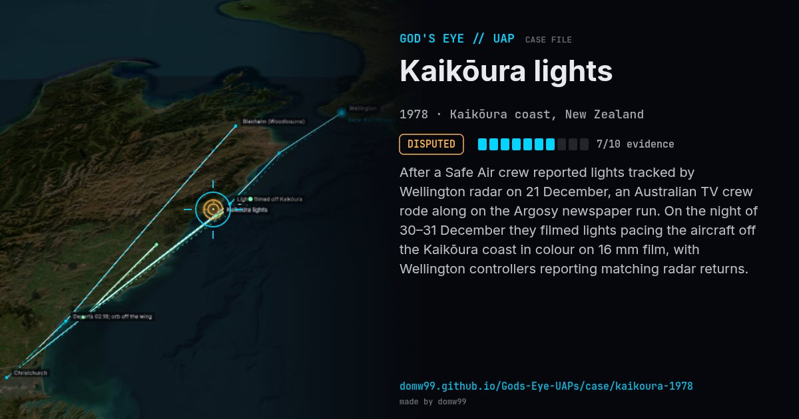

Kaikōura lights
DISPUTED

After a Safe Air crew reported lights tracked by Wellington radar on 21 December, an Australian TV crew rode along on the Argosy newspaper run. On the night of 30–31 December they filmed lights pacing the aircraft off the Kaikōura coast in colour on 16 mm film, with Wellington controllers reporting matching radar returns.
Explanation
Explanations offered include Venus and Jupiter, squid-fishing boat lights, and meteors; none accounts for the radar returns to everyone’s satisfaction.
What was seen
Shape: Bright white lights with a red tinge; pulsing orb
Witnesses: Safe Air crew, TV crew, Wellington radar
Duration: Two flights on Dec 30–31
Browse
- 1970s
- Disputed
- Aviation encounters
- Pilot and aircrew witnesses
- Radar tracking
- Audio recordings or radio transcripts
- Motion-picture film
- Lights and fireballs
- Spheres and orbs